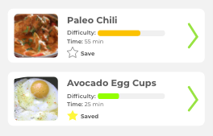
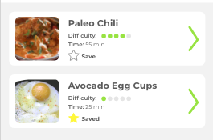
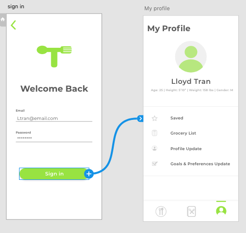

This product is designed to aid people who want to live a healthier lifestyle but don’t know where to start. This app, “Triet” (Try + Diet), is an all-encompassing dietary health resource, giving users the ability to try new and personally selected diets and recipes.
As the designer, I was responsible for user-research, user-testing, wireframing, and prototyping.
Tools: InVision, Adobe Illustrator, Adobe XD
For those looking to adopt new healthy eating habits, Google can be a daunting and overwhelming place to gain knowledge with its copious amount of resources, especially for those just getting started and don’t even know what they don’t know. When trying to gain information on new diets, users will often search multiple times and click through countless resources before gaining sufficient knowledge of the desired topics. After deciding on a new diet to try out, users will then laboriously repeat the endless searching and scrolling to find recipes that fulfill their new diet’s restrictions.
To effectively create a user-centered product, I performed interviews and research to gather information and data.
When searching for a new diet to embark on a healthy journey, participants stated they would Google search key terms and skim through various sources until they found one with their desired information. The participant would then do more searches and scrolling until they had a better understanding of they new diet.
Additionally, studies have shown that 93% of consumers in the US want to eat healthy. Statistics also show that mobile health apps market size expected to exponentially increase by 10x from now until 2025.
To tackle this problem, I designed an all-in-one product that would allow users to access information on dieting and recipes. The app would help them achieve their health goals all in one location without having to search and read through countless sources on the internet.
Additionally, since data from research shows an increase in mobile app usage, an app would be easily accessible to users and will continue to reach more and more users over time.
All in all, Triet would reduce the effort and time spent in learning about new eating habits by compiling all the information into one source. The app will also generate recommended diets and recipes based on the user’s personal needs. The user would be able to read about different diets and access a variety of recipes, all in one app.
Target Audience: Mid 20s-40s. These individuals are typically those who find their bodies not responding as well to unhealthy eating habits as they did in the college and teen days. These individuals are generally more settled on life and are now looking to invest in their health.
I began designing the app by creating a user flow of the app based on the content and features that would be implemented. After establishing a flow, I created low-fidelity sketches of each page and then, from these sketches, transformed them into low-fidelity wireframes using InVision. Below are samples of the user-flow, lo-fi sketches, and wireframes.
Sample (Set-up flow):
Upon review and feedback, I created new versions of the wireframe to improve the flow and usability.
1) Remove filters from “Diets”: Originally I added an option to filter diets based on the user’s preferences, but after review and feedback. This feature isn’t necessary, since the app wouldn’t offer enough diets to where filtering would be necessary, and since diets are simply a guideline, the recipes made from this guideline could be catered for the users regardless of personal preferences/restrictions.
Before/After:
2) Profile editing: On the user’s profile page, I had originally designed it to give users 4 options: viewing saved material, access grocery list, view profile, and view preferences. Upon receiving review and feedback, I realized the profile viewing option was unnecessary, and the steps to edit the profile were unnecessarily tedious. To fix this, I moved the user’s information for the “profile” tab to the main page and changed the tab to take users to edit their information.
Before:
After:
After revising and testing the wireframes, I began my process of creating the high-fidelity prototype.
Learning about new healthy eating habits can be overwhelming for beginners, so I wanted the app to have a minimal and clean feel to lessen the overwhelming-ness users may already have.
I went with the Montserrat font for a clean font face and kept the use of graphics and content on each page to a minimum.
For color, I decided to go with white as the primary color and bright green for accents. White would give the app the minimal and clean feel, and bright green is commonly associated with health and wellness, and would complement the health-oriented nature of the app.
Sign-up Screens:
Diet + Recipe Screens:
Profile Screens:
To ensure proper flow of the app and effective UI design, I had the app tested by potential users in the target audience. From the testing, I recieved feedback based on the user's behavior, reactions, and answers from the post-test interview.
Based on feedback from the user-testing, there were 2 major points of concern. Firstly, the “difficulty level” bar for recipes was not intuitive and made little sense. It was unclear to users what exactly the bar shading represented in terms of difficulty level and whether or not the shifting of the shading was continuous in any way. From this feedback, I redesigned this feature to instead be a series of 5 dots that would be shaded in -- 1 dot being easy difficulty and all 5 dots being rather difficult.
Before:
After:

Secondly, the flow from the sign-in/sign-up page into the app felt unnatural. Orginally, from the sign-in/sign-up page, the app would bring users to their "My Profile" page, but based on feedback, the flow would make more sense to bring users to the "Diet" page.
Original Flow:

Improved Flow:
Click HERE for the Interactive Prototype.
I would like to improve on a few features that better personalize the app and its recommendations for the user.
1) Options in the “Preferences” : Users would have more specific details to log about themselves, such as how much experience they’ve had cooking or what what cooking appliances they have access to. Information such as these would help to cater the recipe recommendations for the user.
2) Personal information : Users should also be able to input more specific information on their body metrics and lifestyle, such as their lifestyle (indicate how sedentary or active they are on a daily basis, and the app would cater diet recommendations that would best fit this) and the business of their days (i.e. if they are, say, a busy CEO, then the recommended recipes would require less time).
3) Inter-user Interactions: I would also like to work on making this app more communal. Since embarking on a new health journey can get difficult and beginners can feel lonely or unsure of whether or not they are headed in the right direction, it may be encouraging to feel the presence of others and hear their experiences. Perhaps users can see the number of people who’ve “saved” certain recipes or diets and can see reviews and comments on these diets and recipes. Reviews would also give users an idea of what may or may not work for their specific body type, if, say, another user who reviewed had similarities in build.
While timeframe for projects are finite, ideas for implementations can be infinite. Sometimes it is more important to prioritize the most important features and design those well, rather than designing for every-single-feature and creating a “cool” but unusable app. With deadlines approaching and ideas still flowing, I realized I had to focus on the quality of the most important components of the product before letting myself get carried away with “cool” features I wanted to add. This allowed me to stay focused on creating a solid and quality prototype that could be improved and added onto overtime.